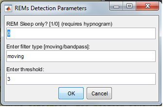
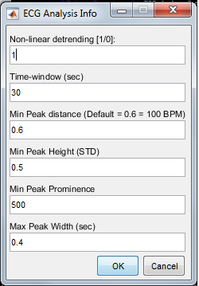
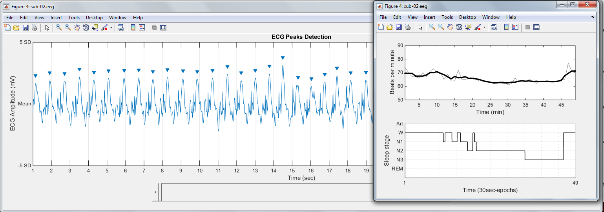
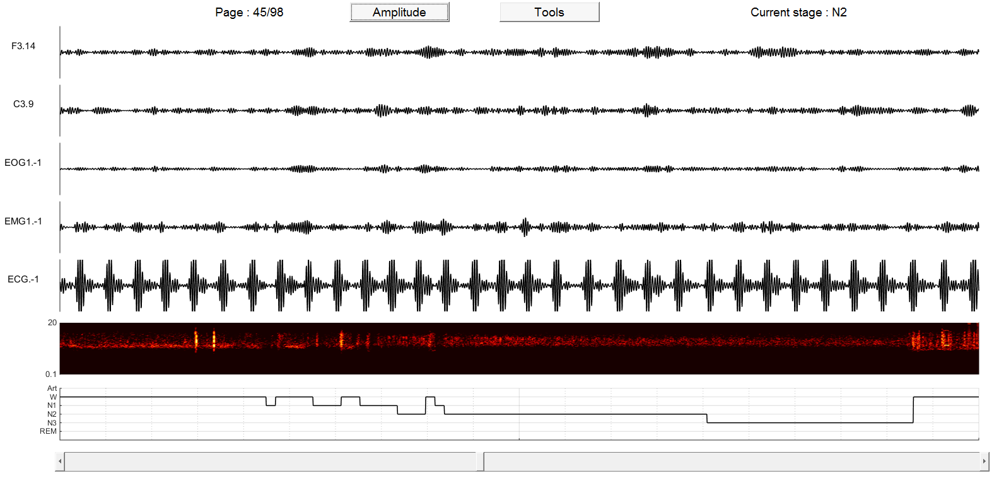

SleepViz : a Matlab toolbox for visualisation of polysomnographic data
February 2017
SleepViz is a very simple and naive Matlab-based graphical interface for visualisation of polysomnographic data. I developed it during my PhD in order to have a quick access to my EEG data with their corresponding spectrogram (time-frequency representation) and hypnogram (sleep scoring). I have progressively implemented some other functions such as sleep stats computation, rapid eye movements detection, filtering...but I would like to emphasize that this is more a 'side' project and you should really use it with caution!

Running SleepViz
Once you have downloaded sleepviz and added it to your Matlab path, just type sleepviz to start the program. In the current version, SleepViz allows input from 2 different formats:
- .edf (using edfRead function by Brett Shoelson, Matlab file exchange
- .eeg (Lyon Neuroscience Research Center in house file format)
- Apply downsampling to 100 Hz: by default, SleepViz will downsample your data to 100 Hz to accelerate the computing of the spectrogram. If you prefer not to resample your data, just put 0 in the textbox.
- Plot spectrogram: requires Signal Processing Toolbox. Plot a spectrogram on specified channel using short-time Fourier transform. Spectrogram is a visual representation of the frequencies spectrum over time. It is especially useful for the scoring of sleep stages which have all different spectral signatures. The default segmentation windows is 10 seconds with an overlap of 0.9. This latter parameter is particularly time-consuming and I recommand putting a lower value if you do not have a powerful computer and/or if you have a dataset of several hours.
- Plot hypnogram: requires a hypnogram file either in .hyp format (Elan in house format) or .txt. In that case it must contains one column of integer crresponding to the sleep stages. By default, sleepviz will resample the hypnogram to get one value per second.
The default hypnogram format of SleepViz is: Wake=0, N1=1, N2=2, N3=3, REM=4, Art=-1 (based on Iber 2007 guidelines).
The slider bar at the bottom of the window allow you to move forward or backward (30 sec epochs) in the EEG data. Spectrogram and hypnogram are displayed for the full record and only the PSG data are affected by the slider bar.
The Amplitude button allows you to modify the amplitude (in mV) of each individual channels.
Finally, the Tools button open a new window with several algorithms detailed below.
Tools
REM Auto-Detect
A simple semi-automatic algorithm for the detection of Rapid Eye Movements (saccades).
The method is the following:
1) Signal smoothing using either a moving average with a window of 100 ms or a bandpass filter (0.1 - 3 Hz, see Andrillon 2015).
2) Computing of the first derivative of the smoothed signal using a 40 ms step. I chose a 40 ms windows since most of naturally occurring human saccades have magnitudes of 15 degrees or less and last thus no more than 30 – 40 ms (the maximum velocity of a saccade is above 500°/sec, see (Bahill et al., 1975).
3) Apply a threshold (mean + X standard deviations) on the derivative to allow for an optimal detection of REMs.
4) The total number of REMs is then defined as the sum of non-concomitant REMs detected in the two components during REM sleep.
When you click on REMs detection, the program asks you to select 2 EOG channels. I would recommend using artefact-free EOG signal (extracted for example using ICA) for a better detection of saccades.
- REM Sleep: uses only epochs scored as REM sleep for the computation of REMs. Requires a hypnogram file.
- Filter Type: either a moving average (100 ms windows) or bandpass filter (0.1 - 3 Hz). Bandpass is generally more conservative.
- Threshold: threshold is the specified number of standard deviations of the derivative signal. Each supra-threshold cluster will be considered as a unique rapid eye movements.
The script also create a .mat file in the data folder which contains analysis info and results
RAPID EYE MOVEMENTS AUTO-DETECTION
-----------------------------------------
ANALYSIS INFO
EEG File : excerpt1.edf
Duration : 30 minutes
Filter type : moving [100 samples]
Threshold : 3
Derivative : 40 ms
RESULTS
Number : 185
Density : 6.17 REMs / minutes
Outfile : C:\Users\Raphael\Desktop\These\GitHub\SleepViz\examples\DREAMS\REMs_detection_excerpt1_filter_moving_thresh_3.mat
-----------------------------------------------
The excellent DREAMS database, in addition with providing free polysomnographic data and corresponding hypnograms also provides the number of REMs visually scored by an expert. Our method with the default parameters yielded 185 REMs (see output above), a figure quite consistent with the 157 visually-scored REMs!
Compute Sleep Stats
SleepViz allows to compute sleep statistics of the current hypnogram with the definitions below. If they do not match what you want, you can modify it in the compute_sleep_stats.m function.
- Time in Bed (TIB): total duration of the hypnogram in minutes.
- Total Dark Time (TDT): duration of the hypnogram from beginning to awakening. This should be used as the reference measure for the computation of sleep stages percentages in cases where the subjects are voluntarily awakened at a certain point in time (i.e. that after this point the subjects interact with the experimenter). If that is not your case, you should use TIB instead of TDT as the reference measure.
- Sleep Period Time (SPT): duration (minutes) from first to last period of sleep.
- Wake After Sleep Onset: duration (minutes) of wake periods within SPT
- Total Sleep Time (TST): SPT - WASO
- TST_N2: same as TST but excluding N1 sleep.
- Sleep Efficiency (SE): TST / TDT * 100 (%)
- Sleep stages: W, N1, N2, N3 and REM sleep expressed in minutes.
- %Sleep stages: W, N1, N2, N3 and REM sleep expressed in percentages of TDT.
- Latencies: latencies of sleep stages from the beginning of the record expressed in minutes.
ECG Analysis
The ECG Analysis tool extracts the mean heart rate across the entire record using the findpeaks function from Signal Processing Toolbox. Once you clicked the button, the following window appears:
Once you specified the ECG channel and desired parameters, a graphical interface opens to let you explore the detected peaks in ECG signal. In parallel, the main ECG structure , containg analysis parameters and the number of detected peaks per epoch and minutes is saved in your original data folder.
Filter signal
A simple bandpass filter (requires Signal Processing Toolbox). You simply need to enter the cut-off frequencies and butterworth order.
